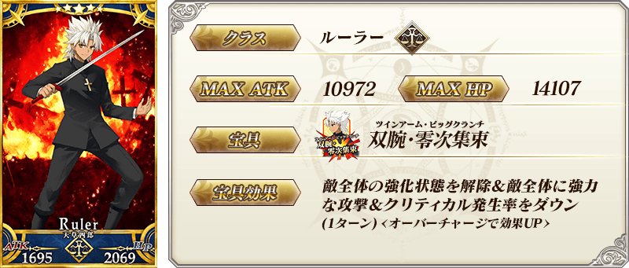
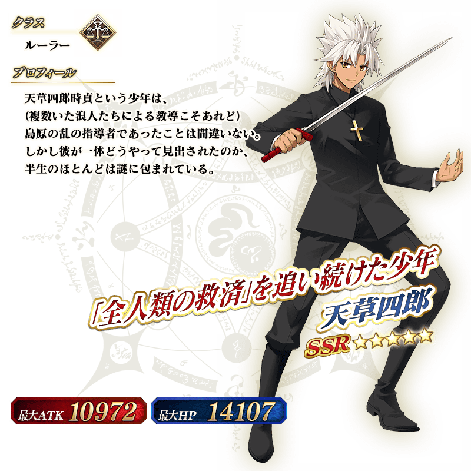

◆「天草四郎Pick Up召喚」期間◆
期間：11月22日(二) 16:00～11月30日(三) 13:5912月7日(三) 12:59
※舉辦期間延長。
以期間限定舉辦「天草四郎Pick Up召喚」！
在預定2016年11月下旬舉辦的期間限定活動「第二代是Alter醬 ～2016聖誕節～」活躍的Servant「★5(SSR)天草四郎」以期間限定Pick Up。
詳情請在聖晶石召喚畫面左下的召喚詳細確認。
※天草四郎在Pick Up召喚期間結束後，不會追加到故事召喚。
Pick Up期間中，期間限定Servant的出現機率提升！
10次召喚中★4(SR)以上1張確定和★3(R)以上的Servant1位確定！
※★4(SR)以上確定包含Servant和概念禮裝。
※所謂「出現機率UP」意指比同稀有度的Servant出現機率更高的設定。



